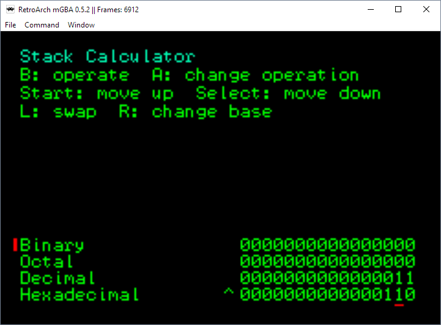

Stack Calculator (mode 3)

Controls:
B: execute current operator on "top" two stack items (the bottom of the screen)
A: change current operator
Start: push stack
Select: pop stack
L: swap top two stack items
R: change base
Concept:
The stack calculator is an exercise not only in understanding and applying bitwise operators but also in handling situations such as data overflow and hardware constraints. This calculator comes with many features, so many that it is quite tricky to map an interface and controls. The interface and controls described above are the "default" proposed by the instructors of the class (CS 2261 - Media Device Architecture). Students were encouraged to think of better layouts for the calculator, but I chose to focus on optimizing performance. Since this is mode 3, every pixel drawn counts. I managed to have some time left over per draw to modulate the color of the words Stack Calculator.
Credits:
Source referenced: TONC